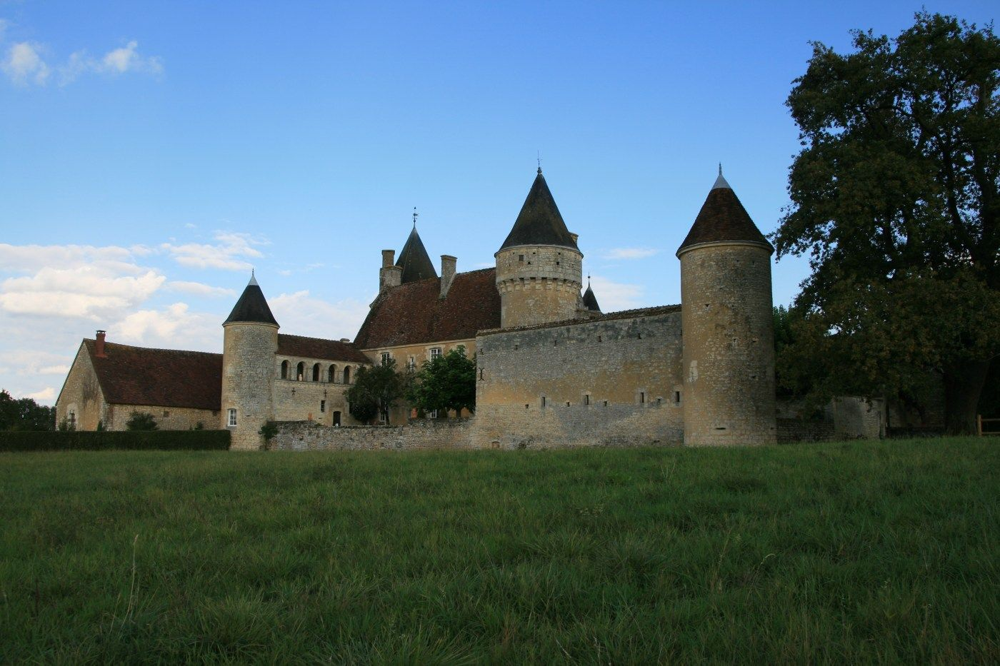
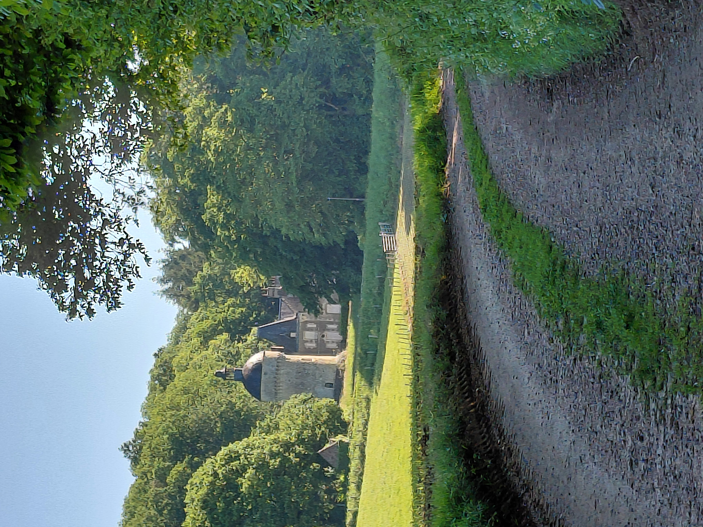
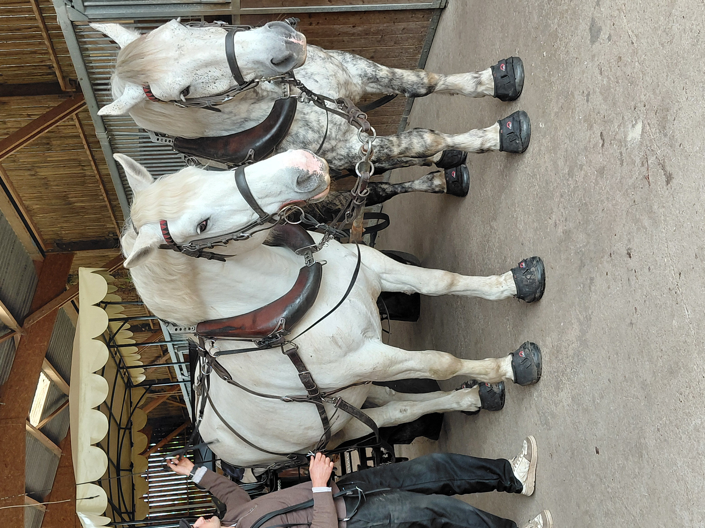
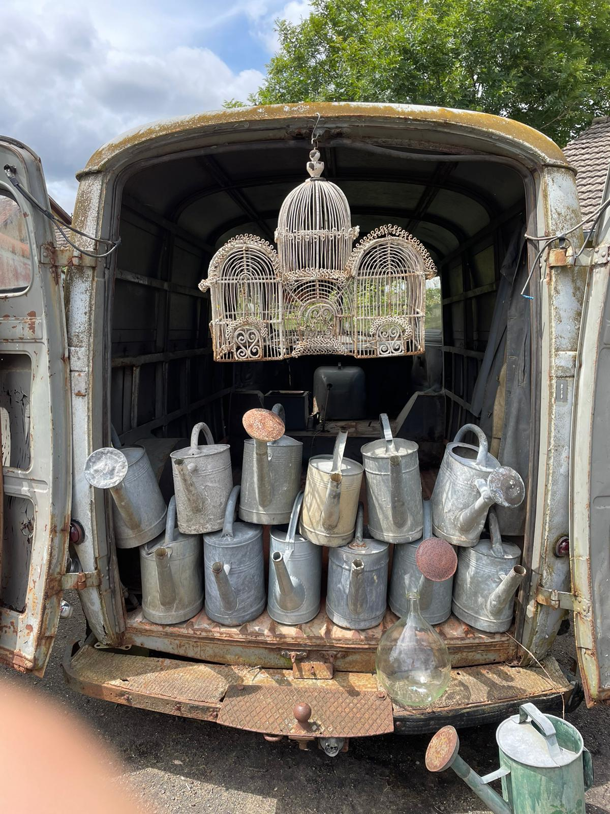

Qu'est-ce que le Perche ? Une certitude : c'est le début de l'Ouest de la France, avec ses paysages vallonnés et son bocage.
C'est une question complexe qui dépend de différents points de vue : le Perche géologique, géographique, historique, ou encore celui du Parc naturel régional. Le Perche est souvent défini par ce qu'il n'est pas : pas le bassin parisien, pas tout à fait la Normandie, pas du tout la Beauce.
Ancien Comté sous l'Ancien Régime, les frontières du Perche sont aujourd'hui dessinées par un Parc naturel régional qui se déploie sur deux départements : l'Orne et l'Eure-et-Loir. Le Perche est devenu une destination appréciée pour sa proximité avec Paris, Rennes, Le Mans, la Vallée de la Loire et les plages normandes.
Entre terroir, rivières, collines, vergers, forêts, bocage, manoirs, villages pittoresques et villes historiques à taille humaine telles que Nogent-le-Rotrou, Bellême et Mortagne — chacune se disputant le titre de capitale du Perche — sans oublier les célèbres chevaux percherons… Le Perche est bien plus qu'une simple carte postale. C'est une identité à part entière, une source infinie de charme et d'authenticité.
L'Huisne est la rivière emblématique du Perche. Elle organise les reliefs et le réseau hydrographique du territoire. Le Perche déroule 500 km de cours d'eau au creux de ses vallées. L'Huisne prend sa source… à La Perrière.


Les massifs forestiers du Perche couvrent un quart du territoire. Ils offrent un cadre de choix pour des échappées vertes, idéal pour trailer ou randonner. Les plus célèbres sont les forêts de Réno-Valdieu, Bellême, Senonches, Perche-Trappe et La Ferté-Vidame.
Visites de fermes, de jardins remarquables, de musées, de châteaux, de manoirs, brocantes, vide-greniers, antiquités, boutiques tendances, centres équestres, golfs et même plages aménagées… petits et grands y trouvent leur compte !

Le Perche ne se vante pas de locomotives touristiques telles que le Mont Saint-Michel, les Châteaux de la Loire ou les Plages du Débarquement. Pourtant, il regorge d'une multitude de trésors discrets qui n'attendent qu'à être découverts.
Pour vous aider à les dénicher, dès la confirmation de votre réservation au gîte du Clos de la Fuie, nous vous enverrons un livret d'accueil complet. Celui-ci regorge de nos suggestions et coups de cœur pour toute la famille, ainsi qu'une sélection d'activités testées et approuvées par nos enfants. De plus, nous mettons à votre disposition de la documentation touristique pour enrichir votre exploration. Ainsi, après avoir parcouru les chemins du Perche, vous serez en mesure de lui donner sa meilleure définition : la vôtre.
Le Clos de la Fuie est le meilleur endroit pour prendre le pouls du Perche, entre nature et vieilles pierres, situé au cœur de la Petite Cité de Caractère® de La Perrière, un village de 230 âmes avec commerces (boulangerie bio, épicerie, restaurants, café, ateliers et galeries d'art).


En résumé, bien que le Perche n'ait pas obtenu le statut de département lors de la Révolution, il demeure une région naturelle étendue notamment sur l'Orne, l'Eure-et-Loir, une partie de la Sarthe et du Loir-et-Cher. C'est de plus un Parc naturel régional situé à seulement 1 h 30 de Paris, offrant ainsi un écrin de nature préservé à proximité de la capitale.
C'est un territoire imprégné d'histoire et de patrimoine architectural, où chaque village raconte une histoire. Ses paysages vallonnés, ses forêts majestueuses et ses villages pittoresques en font un lieu d'une grande beauté, préservant un art de vivre authentique et une harmonie avec la nature.
Le Perche est un petit pays idéal pour se ressourcer et se mettre au vert dans un cadre bucolique et authentique. Vous tomberez sous le charme de ce patrimoine bâti et naturel de toute beauté.
Le bonheur est dans le Perche : les médias en parlent
Dans le Perche, les articles, reportages télévisés et podcasts se multiplient, tous témoignant de la douceur de vivre qui règne ici. Découvrez une petite sélection qui capture toute la beauté de cette région.
- Reportage de France 24
- Les 100 lieux qu'il faut voir
- Le village préféré des Français
- Le Monde — Le paradis vert
- The New York Times
- Elle Décoration
- Perchissime
- Les Globe-blogueurs
Venez vérifier par vous-même que le bonheur est dans le Perche.